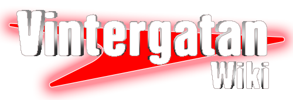

Projekt
Detta är en lista av några olika projekt som jag är involverad i.
Onlineföreningen SGC
- Grundat: 2021
- Huvudlänk: Bli medlem!
- Discord: SGC's Discordserver
- Sociala medier:
 YouTube, Twitter,
YouTube, Twitter,  Instagram
Instagram
Jag (WikiRaze) är aktiv i SGC:s personal-ledning, även kallat "Modteam". Modteamet har hand om medlemsärenden och driver discordens mer praktiska delar. Modteamet ansvarar även för de andra personalgrupperna i föreningen.
Discorden startade 10 februari 2021, men fick sitt namn "SGC" den 8 september 2021. Den 22 augusti 2022 blev SGC en sverok-förening, och det är så den styrs än idag. Mer info om SGC på https://sgc.se!
Vintergatan Wiki 
- Grundat: 2009 (adopterat av mig 2020)
- Huvudlänk: Vintergatan Wikin
- Discord: Rymdmacken
- Sociala medier: YouTube
Jag (WikiRaze) är wikins admin tillsammans med bland annat Firegloom. Som admin ser vi till att alla skribenter följer stilguiderna, har korrekt information, och skyddar artiklarna från vandalism.
Wikin grundades redan 2009 av Colonelsam, som senare övergav projektet. Jag adopterade wikin 2020 och har drivit den sedan dess. Läs mer om att redigera på Vintergatan Wikin på Wikins redigeringsportal!
90gQ Wiki
- Grundat: 2015
- Huvudlänk: 90gQ Wikin
- Discord: 90gQ Wikin's Discord
- Sociala medier: YouTube, Twitter
Jag (WikiRaze) är wikins grundare och admin. Tillsammans med bland annat Spisen, eke, och TechnicProblem ser vi admins till att alla skribenter följer stilguiderna, har korrekt information, och skyddar artiklarna från vandalism.
Wikin grundades av mig 2015 men var väldigt inaktiv fram tills 2017 då den började byggas till den wiki det är idag. Läs mer om att redigera på 90gQ Wikin på Wikins redigeringsportal!